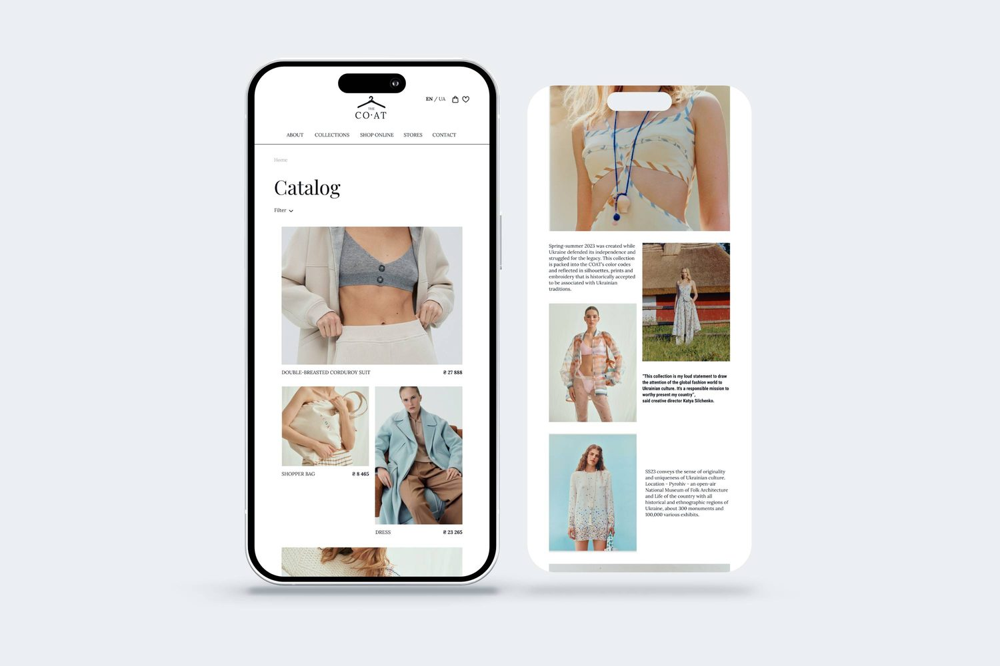
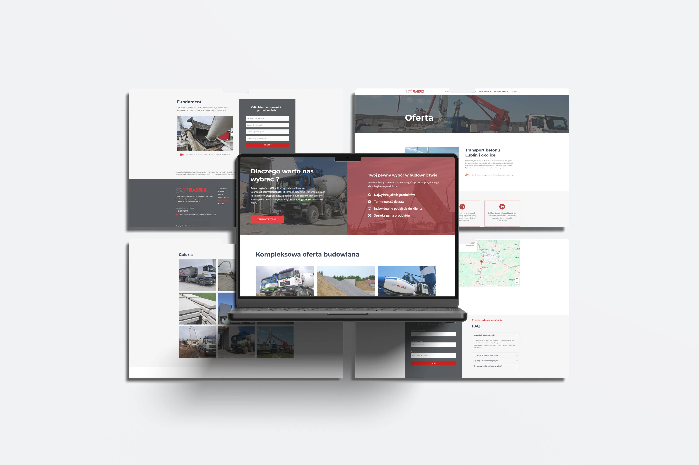

Marmix
UX/UI Designer • Website Redesign & Build
Hover the preview to scroll the full homepage →


The redesign at a glance: a clear, confident homepage and product pages built around a single message and an obvious call to action — a world away from the dark, text-heavy 2015 site.
01.Overview
Marmix is a ready-mix concrete manufacturer based near Lublin. The company produces concrete and building materials and delivers them within roughly a 40 km radius, serving two very different audiences: construction firms working to a schedule, and individual investors pouring their first foundation.
Their website dated back to 2015 and no longer matched the scale or professionalism of the business. It looked like a directory listing, not a supplier you would trust with a delivery on a live building site. I took the project end to end — auditing the old site, running the research, restructuring the information architecture, designing the UI in Figma, and building the new site in WordPress and Elementor myself.
02.The brief
The client didn't ask for “a prettier website”. They asked for a site that would win more work. Translated into design goals, that meant four things:
Build trust instantly
Look as established and reliable as the company actually is, so a contractor feels safe placing an order.
Make the offer legible
Present the full range — concrete, materials, services — so a visitor understands it in seconds, not paragraphs.
Turn visits into contact
Give every page a clear next step: a call, an enquiry, or a calculation that starts the conversation.
Stay self-manageable
Ship on a stack the team can maintain themselves, without a developer on retainer.
03.Research
Before touching the design, I wanted to understand three things: what was wrong with the old site, how competitors present the same offer, and what the two buyer types actually need in order to act.
Heuristic audit of the old site
I went through every page and logged the issues that were quietly working against the business:
- Dated, low-trust visual language. A dark, textured theme and cramped layouts made a serious manufacturer look like a hobby project.
- Overloaded navigation. Eight competing top-level items (Home, Realizations, Gallery, Production process, Calculator, Price list, Contact, EU funding) meant nothing stood out.
- Walls of text. The offer was buried in dense SEO copy and stacked tabs, with weak hierarchy and no scannable structure.
- Broken and inconsistent imagery. The gallery literally showed broken image placeholders next to small, mismatched photos.
- No clear call to action. No obvious path to call or order; the phone number sat passively in a corner.
- A useful tool, hidden. The concrete calculator — genuinely valuable — was a bare, unlabelled form that was easy to miss.
- Contact buried under legalese. The contact page led with GDPR and registry copy before the actual phone number and form.
- No social proof, no answers. Nothing addressed the questions buyers ask before choosing a supplier — delivery area, concrete classes, pump availability.

The 2015 site across its key pages — offer, gallery, calculator and contact.
The entire range hidden inside stacked tabs and paragraphs of SEO copy.
Broken image placeholders sitting among small, inconsistent photos.
A bare, unlabelled form with no framing — easy to overlook.
The form pushed below long blocks of GDPR and registry copy.
Competitive scan
I looked at how other regional ready-mix and building-material suppliers present their offer. The stronger ones did three things consistently: they led with one clear message and a phone call, they stated their delivery area up front, and they made the concrete classes and services easy to compare. The weaker ones repeated the old Marmix mistake — treating the homepage as a document to read rather than a decision to make.
Who is actually buying
The single most useful insight was that Marmix serves two buyers with different needs, and the old site spoke to neither clearly. I framed them as the lens for every layout decision:
The contractor
Ordering for a live site. Decides fast and needs:
- Delivery radius & availability
- Concrete classes (C8/10–C40/50)
- Pump & transport options
- A direct number to call
The individual investor
Pouring a foundation, less experienced. Needs:
- Plain-language guidance
- A calculator to estimate volume
- Signals the company is trustworthy
- An easy, low-pressure way to ask
04.Information architecture
The biggest structural problem was the navigation. I collapsed eight scattered items into a focused set of six and, crucially, grouped the entire offer under one clear “Oferta” section with dedicated product subpages — so each product and service gets its own space instead of fighting for room in the top menu.
- Home
- Realizations
- Gallery
- Production process
- Concrete calculator
- Price list
- Contact
- EU funding
- Home
- About
- Offer — 6 product/service subpages
- Realizations — projects + gallery merged
- Concrete calculator
- Contact
“Gallery” and “Realizations” were merged into a single, stronger case-study section. “Production process” and “EU funding” became supporting content inside About and Realizations rather than competing tabs. The result is a menu that maps to how people actually decide, not to how the company is organised internally.
05.Design & build
From the IA I moved into wireframes and then high-fidelity UI in Figma, designing mobile-first and building the approved screens in WordPress and Elementor. A few decisions did most of the work:
One message, one action in the hero
The homepage now opens with a single line — “Marmix – beton Lublin” — over a real photo of the fleet, with one red “Zadzwoń teraz” button. The visitor's job on that screen is obvious.
The offer as a scannable grid
The stacked tabs became a six-tile product grid (ready-mix, dry mix, other concretes, precast, transport, excavator services), each linking to a focused subpage. A contractor can scan the whole range in one glance.
A three-step ordering path
To remove the “how do I even buy concrete?” friction, I introduced a simple explainer: get in touch → choose the product and details → receive the delivery.
Trust, made visible
Benefits (quality, punctuality, individual approach), certificates, EU-funding marks and an FAQ now do the reassurance work the old site left to chance.
Here is how the key screens turned out:

Homepage, offer, product subpages, calculator, gallery and contact — one consistent system across the whole site.
06.Outcome
The new Marmix site is modern, trustworthy and built to convert. The offer is finally easy to understand, every page leads toward a call or an enquiry, and the calculator gives buyers a reason to engage before they even get in touch. Because it's built in WordPress, the team keeps it up to date themselves.
The redesign at a glance — measured by design decisions, not vanity metrics.
What I'd add next
The honest next step is measurement. I'd instrument the calls and enquiries, watch the calculator completion rate, and A/B test the hero CTA wording — then let real numbers, not assumptions, guide the next iteration.
Yuliia — if the client shares any real results (call volume, enquiries, a testimonial, launch date), drop them in here and I'll turn them into a proper results section with stat boxes.
The finished system, at a glance — five of the redesigned screens in one view.
Read more of my case studies
👋 Get in touch at
julidovha05@gmail.com